suppressPackageStartupMessages({
library(caret)
library(corrplot)
library(ggplot2)
library(FactoMineR)
library(factoextra)
library(mixOmics)
library(tidyr)
library(here)
}) Variables latentes
Discrimination des saumons suivant leur provenance
Classifaction
ACP
PLS-DA
Apprentissage supervisé par une approche PLS
Discrimination des saumons suivant leur provenance et leur mode de production sur la base de données de caractérisation chimique.
Vous avez la possibilité de télécharger le document ici :) 📥 Télécharger le fichier PDF
Présentation du code
Je vous présente ci-dessous, le code utilisé pour mener à bien ce projet, avec les étapes et explications correspondantes.
Librairies
saumon <- read.csv(here("data", "ICPMS_raw_data.csv"))Préparation du jeu de données
Les 20 éléments restants ont été sélectionnés à partir des données brutes de ICP-MS; Li, B, Al, V, Cr, Mn, Fe, Co, Ni, Cu, Zn, As, Se, Rb, Sr, Nb, Mo, Cd, Cs, Ta’
str(saumon)'data.frame': 521 obs. of 38 variables:
$ Class : chr "Alaskan" "Alaskan" "Alaskan" "Alaskan" ...
$ X7..Li....No.Gas..: num 41.7 26.2 29.1 27.4 48.3 ...
$ X9..Be....No.Gas..: num 0.36 0.13 0.18 0.26 0.2 0.13 0.09 0.14 0.14 0.13 ...
$ X11..B....No.Gas..: num 895 714 630 637 1135 ...
$ X23..Na....He.. : num 3515111 1972504 2215578 2146019 2613561 ...
$ X24..Mg....He.. : num 1367207 1043805 1038513 1059030 1236369 ...
$ X27..Al....He.. : num 942 953 1548 897 988 ...
$ X28..Si....He.. : num 15274 13080 12523 12792 13179 ...
$ X31..P....He.. : num 8489171 6068584 6473927 6611607 7205997 ...
$ X39..K....He.. : num 6669882 4515977 5007307 4953765 5337876 ...
$ X44..Ca....He.. : num 60213 34519 45423 43136 63616 ...
$ X47..Ti....He.. : num 145 254 179 184 177 ...
$ X51..V....He.. : num 14.34 3.33 9.47 11.57 8.88 ...
$ X52..Cr....He.. : num 17.9 10.4 30.5 28.6 37.9 ...
$ X55..Mn....He.. : num 299 302 236 164 249 ...
$ X56..Fe....He.. : num 11212 8978 8687 9740 14683 ...
$ X59..Co....He.. : num 8.16 5.04 5.56 4.49 5.49 4.6 3.51 4.63 4.86 3.5 ...
$ X60..Ni....He.. : num 38.2 79.3 90.5 39.3 95.8 ...
$ X63..Cu....He.. : num 1506 1192 1377 1049 1435 ...
$ X66..Zn....He.. : num 22574 12049 13794 11922 16469 ...
$ X71..Ga....He.. : num 0 0.74 0 0.75 0.76 0.36 0 0 0.37 0.35 ...
$ X72..Ge....He.. : num 0 0.43 0.43 0 0 0.44 0 0.48 0.46 0 ...
$ X75..As....He.. : num 1235 1129 1047 1224 1435 ...
$ X78..Se....He.. : num 1741 1673 1332 1503 1686 ...
$ X85..Rb....He.. : num 3757 2723 2900 2746 3071 ...
$ X88..Sr....He.. : num 1604 747 999 1095 1935 ...
$ X93..Nb....He.. : num 10.75 7.05 6.93 5.56 10.56 ...
$ X95..Mo....He.. : num 14.75 7.11 7.78 8.93 10.21 ...
$ X107..Ag....He.. : num 0.73 0.29 1.64 0.46 0.83 0.57 1.24 0.39 0.86 1.22 ...
$ X111..Cd....He.. : num 5.55 4.4 9 9.19 6.6 ...
$ X133..Cs....He.. : num 93.4 66.5 69.4 61 68.2 ...
$ X135..Ba....He.. : num 11.7 243.4 25.6 21.9 20 ...
$ X181..Ta....He.. : num 18.3 10.5 13.3 59.3 15.9 ...
$ X182..W....He.. : num 1.07 0.67 0.96 1.38 1.02 0.72 0.73 0.49 0.54 0.82 ...
$ X205..Tl....He.. : num 3.21 2.21 2.32 1.15 2.18 2.13 1.56 3.82 1.44 2.15 ...
$ X206...Pb.....He..: num 2.56 5.78 3.33 1.45 3.33 1.65 6.22 1.62 3.8 3.97 ...
$ X207...Pb.....He..: num 1.95 6.34 3.47 1.82 3.64 2.03 5.51 1.13 4.01 4.99 ...
$ X208..Pb....He.. : num 2.19 6.11 3.25 1.77 3.33 1.83 5.69 1.38 3.85 4.49 ...saumon <- saumon[c(1, 2, 4, 7, 13, 14, 15, 16, 17, 18, 19, 20, 23, 24, 25, 26, 27, 28, 30, 31, 33)]
names(saumon) <- c("pays", "Li", "B", "Al", "V", "Cr", "Mn", "Fe", "Co", "Ni", "Cu", "Zn", "As", "Se", "Rb", "Sr", "Nb", "Mo", "Cd", "Cs", "Ta")Convertir la colonne pays en factor
saumon$pays <- as.factor(saumon$pays)
summary(saumon) pays Li B Al
Alaskan : 99 Min. : 0.00 Min. : 0.0 Min. : 35.7
Iceland-F: 55 1st Qu.: 9.95 1st Qu.: 92.1 1st Qu.: 943.5
Iceland-W: 90 Median :17.79 Median : 359.7 Median : 1447.5
Norway :100 Mean :20.61 Mean : 382.7 Mean : 2408.3
Scotland :177 3rd Qu.:28.96 3rd Qu.: 585.3 3rd Qu.: 2736.1
Max. :87.00 Max. :1346.1 Max. :45092.6
V Cr Mn Fe
Min. : 0.00 Min. : 5.72 Min. :104.7 Min. : 2921
1st Qu.: 6.30 1st Qu.: 18.52 1st Qu.:191.4 1st Qu.: 5423
Median :10.20 Median : 30.30 Median :228.3 Median : 7012
Mean :11.56 Mean : 42.62 Mean :245.1 Mean : 8231
3rd Qu.:15.30 3rd Qu.: 51.60 3rd Qu.:289.2 3rd Qu.:10301
Max. :95.70 Max. :396.75 Max. :774.9 Max. :40184
Co Ni Cu Zn
Min. : 3.50 Min. : 3.90 Min. : 458.4 Min. : 5765
1st Qu.: 7.50 1st Qu.: 15.30 1st Qu.: 873.3 1st Qu.:10471
Median :10.80 Median : 23.68 Median :1159.3 Median :13916
Mean :10.92 Mean : 58.92 Mean :1252.4 Mean :13747
3rd Qu.:13.57 3rd Qu.: 50.70 3rd Qu.:1476.0 3rd Qu.:16421
Max. :29.90 Max. :1596.60 Max. :8928.6 Max. :26602
As Se Rb Sr
Min. : 788.1 Min. : 453.3 Min. :1838 Min. : 281.1
1st Qu.:1343.4 1st Qu.: 825.6 1st Qu.:2879 1st Qu.: 845.8
Median :1799.1 Median :1296.8 Median :3438 Median :1200.0
Mean :2091.7 Mean :1375.0 Mean :3523 Mean :1379.4
3rd Qu.:2530.9 3rd Qu.:1833.3 3rd Qu.:4127 3rd Qu.:1738.2
Max. :6746.5 Max. :3154.4 Max. :6320 Max. :8613.3
Nb Mo Cd Cs
Min. : 0.00 Min. : 3.00 Min. : 0.000 Min. : 47.10
1st Qu.: 2.70 1st Qu.: 9.00 1st Qu.: 0.300 1st Qu.: 68.39
Median : 6.30 Median :11.70 Median : 0.990 Median : 82.20
Mean : 15.66 Mean :12.26 Mean : 4.723 Mean : 89.19
3rd Qu.: 13.78 3rd Qu.:14.40 3rd Qu.: 7.800 3rd Qu.:107.40
Max. :296.92 Max. :66.00 Max. :51.900 Max. :217.19
Ta
Min. : 0.30
1st Qu.: 4.94
Median : 10.52
Mean : 19.09
3rd Qu.: 20.15
Max. :268.14 Configurer preProcess pour la normalisation min-max
preproc <- preProcess(saumon, method = "range")
saumon_norm <- predict(preproc, saumon)Vérification de valeurs manquantes
{sum(is.null(saumon))} str(saumon_norm)
Analyse descriptif
Matrice de corrélation
cor(saumon_norm[, -1], use = "complete.obs") Li B Al V Cr Mn
Li 1.00000000 0.724641027 0.04008869 0.024334770 0.08005162 0.12836481
B 0.72464103 1.000000000 -0.11376094 0.070988674 0.04267486 -0.16201305
Al 0.04008869 -0.113760939 1.00000000 -0.122583713 0.07338391 0.30331472
V 0.02433477 0.070988674 -0.12258371 1.000000000 0.09779409 -0.01296994
Cr 0.08005162 0.042674861 0.07338391 0.097794089 1.00000000 0.14218022
Mn 0.12836481 -0.162013053 0.30331472 -0.012969938 0.14218022 1.00000000
Fe 0.25317831 0.008776603 0.27505466 0.159549917 0.28942941 0.46487195
Co -0.26034878 -0.425520211 0.17365018 -0.038118096 0.05600151 0.50677703
Ni 0.15426275 0.174676930 -0.04150267 0.094758157 0.23774355 -0.03411629
Cu 0.25409546 0.022376096 0.09103141 0.111587130 0.30627305 0.33886807
Zn 0.26209502 -0.091873578 0.21303529 0.039069060 0.12705212 0.62871674
As 0.07282843 -0.231511136 0.24805751 -0.127048528 0.04332965 0.45817103
Se 0.19054180 -0.161683420 0.18229134 -0.008138077 0.16589213 0.51642643
Rb 0.04282060 -0.217158345 0.21644267 -0.074508843 0.18615152 0.64335441
Sr 0.36064173 0.275550424 0.13837845 0.114383963 0.06042190 0.34308817
Nb -0.05934258 -0.021515850 -0.01853557 -0.019491929 0.03429055 0.10774112
Mo 0.10421444 0.140319783 0.01026243 0.088107541 0.42042750 0.20471256
Cd 0.09084172 -0.135760711 0.15647636 0.093146759 0.14878504 0.29846500
Cs 0.02233589 -0.273479302 0.28315336 -0.111128301 0.16923000 0.60488525
Ta -0.09605333 -0.128510184 0.01275089 -0.049036467 0.06082321 0.20172671
Fe Co Ni Cu Zn As
Li 0.253178306 -0.26034878 0.1542627477 0.25409546 0.2620950186 0.07282843
B 0.008776603 -0.42552021 0.1746769304 0.02237610 -0.0918735782 -0.23151114
Al 0.275054656 0.17365018 -0.0415026707 0.09103141 0.2130352910 0.24805751
V 0.159549917 -0.03811810 0.0947581574 0.11158713 0.0390690600 -0.12704853
Cr 0.289429410 0.05600151 0.2377435505 0.30627305 0.1270521172 0.04332965
Mn 0.464871950 0.50677703 -0.0341162865 0.33886807 0.6287167425 0.45817103
Fe 1.000000000 0.23142264 0.1519759449 0.60107970 0.6699140899 0.17341713
Co 0.231422638 1.00000000 -0.2197332620 0.16829169 0.4893560155 0.37495967
Ni 0.151975945 -0.21973326 1.0000000000 0.59157403 0.0009223212 -0.16137993
Cu 0.601079703 0.16829169 0.5915740256 1.00000000 0.5935674243 0.13872561
Zn 0.669914090 0.48935602 0.0009223212 0.59356742 1.0000000000 0.52222525
As 0.173417127 0.37495967 -0.1613799282 0.13872561 0.5222252491 1.00000000
Se 0.769207606 0.30519477 0.0590346669 0.62420299 0.8192668000 0.34391452
Rb 0.465893237 0.62962681 -0.0820321103 0.41919822 0.6855785324 0.46802316
Sr 0.145974273 -0.01132413 -0.0046252187 0.06733761 0.1647603608 0.03433229
Nb 0.083513250 0.17287801 -0.0011868805 0.07977229 0.1744046862 0.09849027
Mo 0.101636738 0.31989378 0.2582018447 0.37676314 0.2552816609 0.09634495
Cd 0.667687354 0.10537444 0.0858341537 0.44220436 0.5185553926 0.05601936
Cs 0.380361544 0.53676923 -0.1205520641 0.29233323 0.5767797766 0.61844455
Ta 0.158705002 0.27069289 0.0063345396 0.15556021 0.2734057750 0.15783964
Se Rb Sr Nb Mo Cd
Li 0.190541801 0.04282060 0.360641733 -0.05934258 0.10421444 0.09084172
B -0.161683420 -0.21715834 0.275550424 -0.02151585 0.14031978 -0.13576071
Al 0.182291343 0.21644267 0.138378448 -0.01853557 0.01026243 0.15647636
V -0.008138077 -0.07450884 0.114383963 -0.01949193 0.08810754 0.09314676
Cr 0.165892135 0.18615152 0.060421901 0.03429055 0.42042750 0.14878504
Mn 0.516426429 0.64335441 0.343088165 0.10774112 0.20471256 0.29846500
Fe 0.769207606 0.46589324 0.145974273 0.08351325 0.10163674 0.66768735
Co 0.305194769 0.62962681 -0.011324131 0.17287801 0.31989378 0.10537444
Ni 0.059034667 -0.08203211 -0.004625219 -0.00118688 0.25820184 0.08583415
Cu 0.624202989 0.41919822 0.067337612 0.07977229 0.37676314 0.44220436
Zn 0.819266800 0.68557853 0.164760361 0.17440469 0.25528166 0.51855539
As 0.343914522 0.46802316 0.034332287 0.09849027 0.09634495 0.05601936
Se 1.000000000 0.67263481 0.064750989 0.20787315 0.10240250 0.71970435
Rb 0.672634807 1.00000000 0.042192750 0.23350173 0.23237317 0.36564902
Sr 0.064750989 0.04219275 1.000000000 -0.18928860 -0.05813792 0.11870994
Nb 0.207873151 0.23350173 -0.189288598 1.00000000 0.24765213 0.12228641
Mo 0.102402501 0.23237317 -0.058137918 0.24765213 1.00000000 -0.05689127
Cd 0.719704345 0.36564902 0.118709942 0.12228641 -0.05689127 1.00000000
Cs 0.542852861 0.86687886 0.115683237 0.15873294 0.09295079 0.27459355
Ta 0.332121329 0.36836121 -0.208432236 0.94275429 0.28107000 0.19763015
Cs Ta
Li 0.02233589 -0.09605333
B -0.27347930 -0.12851018
Al 0.28315336 0.01275089
V -0.11112830 -0.04903647
Cr 0.16923000 0.06082321
Mn 0.60488525 0.20172671
Fe 0.38036154 0.15870500
Co 0.53676923 0.27069289
Ni -0.12055206 0.00633454
Cu 0.29233323 0.15556021
Zn 0.57677978 0.27340577
As 0.61844455 0.15783964
Se 0.54285286 0.33212133
Rb 0.86687886 0.36836121
Sr 0.11568324 -0.20843224
Nb 0.15873294 0.94275429
Mo 0.09295079 0.28107000
Cd 0.27459355 0.19763015
Cs 1.00000000 0.28032163
Ta 0.28032163 1.00000000corrplot::corrplot(cor(saumon_norm[, -1]), method = "color", type = "upper", order="FPC",
tl.cex = 0.6,
number.cex = 0.5,
addCoef.col = "black")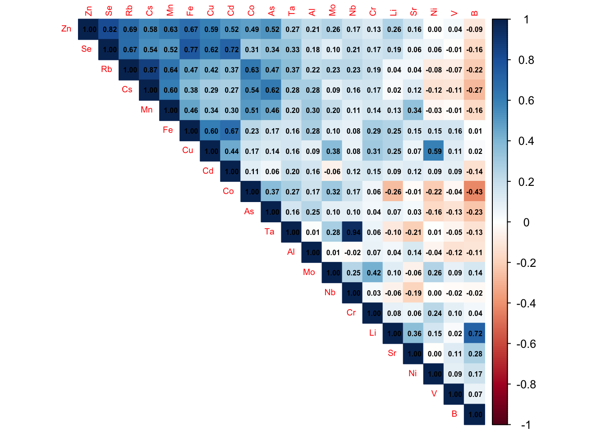
Distribution des valeurs observés pour les différents variables
Transformation des données en format long
saumon_norm_long <- pivot_longer(saumon_norm, cols = -1, names_to = "variable", values_to = "value")Histogrammes avec courbes de densité pour chaque variable
ggplot(saumon_norm_long, aes(x = value)) +
geom_histogram(aes(y = after_stat(density)), bins = 30, fill = "blue", color = "white") +
geom_density(color = "red", linewidth = 1) +
facet_wrap(~variable, scales = "free") +
theme_minimal() +
labs(y = "Densité", title = "Distribution des Variables avec Courbe de Densité")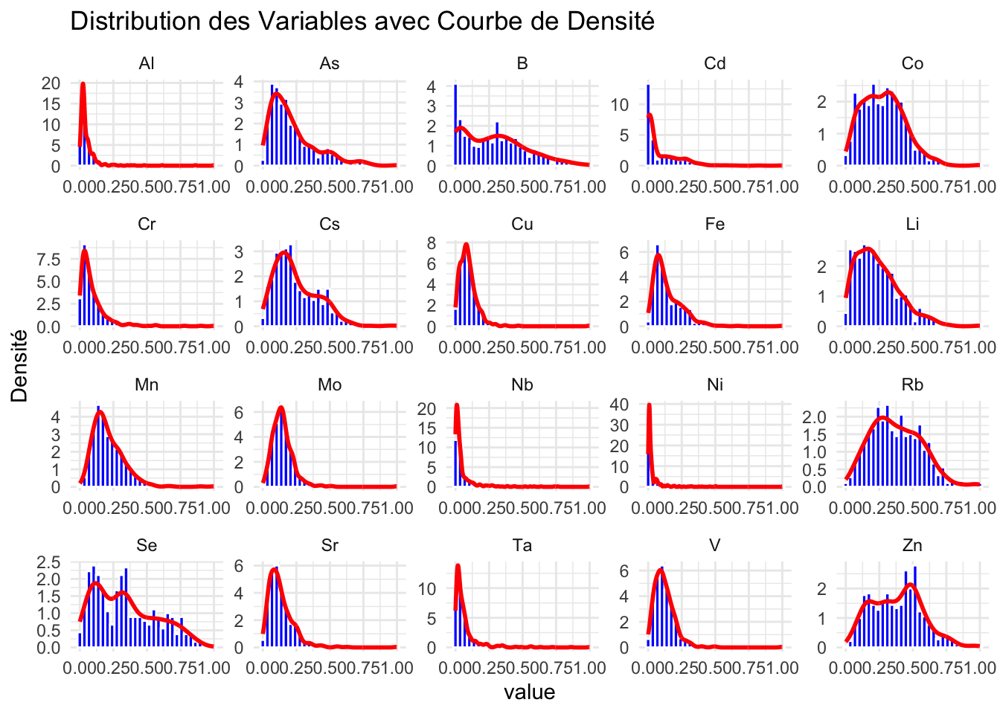
Tableau de contingence des pays
table(saumon_norm$pays)
Alaskan Iceland-F Iceland-W Norway Scotland
99 55 90 100 177 ACP FactoMineR
pca_res <- PCA(saumon_norm[, -1], scale.unit = FALSE)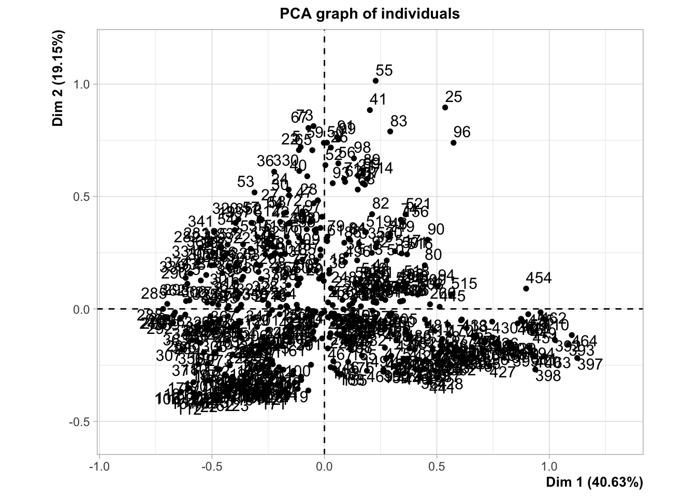
Warning: ggrepel: 18 unlabeled data points (too many overlaps). Consider
increasing max.overlaps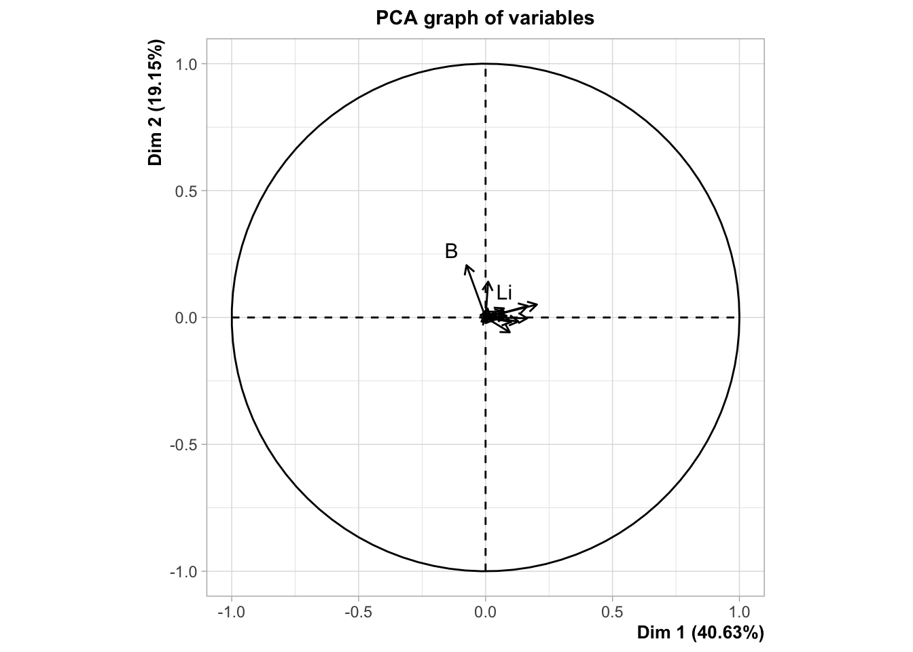
fviz_screeplot(pca_res)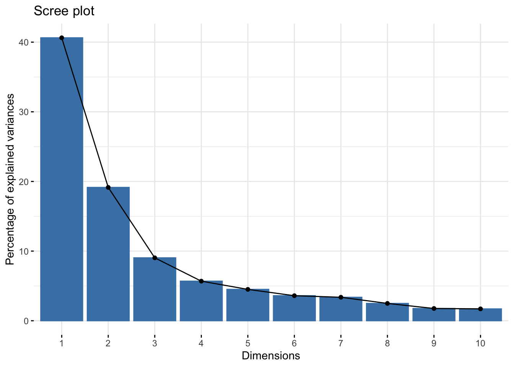
fviz_pca_var(pca_res)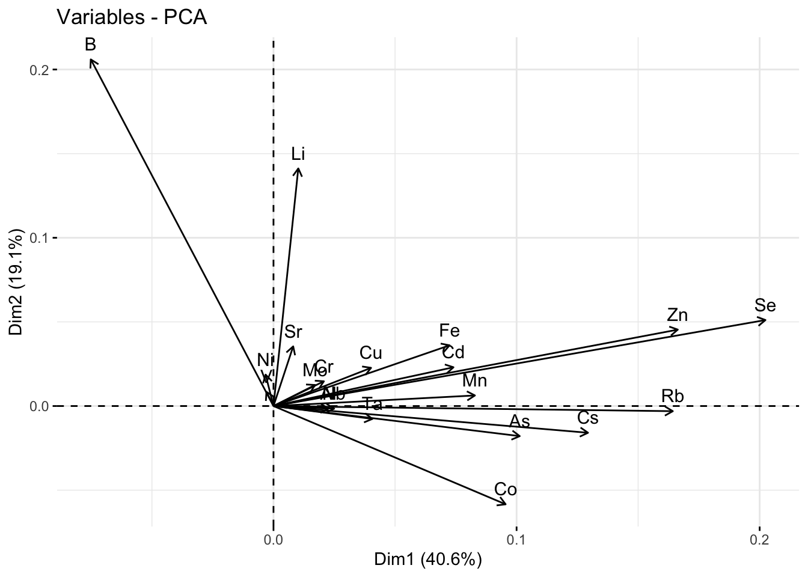
fviz_pca_var(pca_res, axes = c(2,3))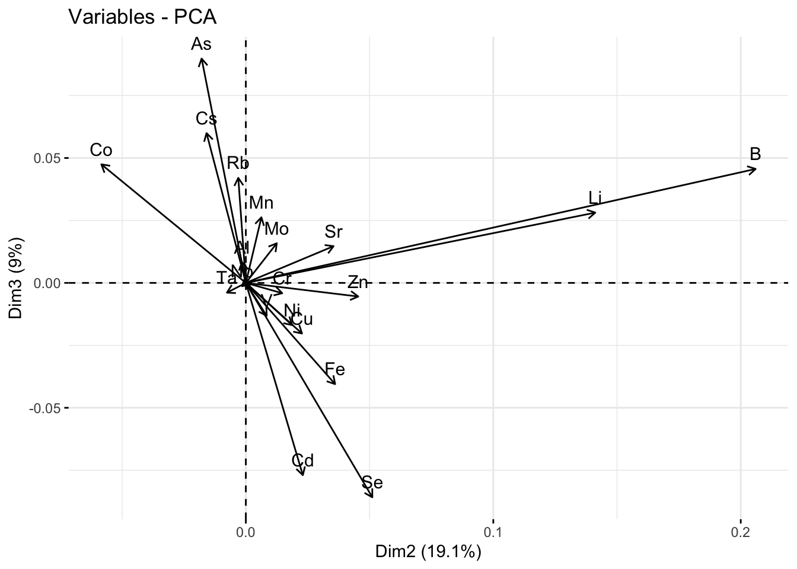
round(pca_res$var$cos2,2) Dim.1 Dim.2 Dim.3 Dim.4 Dim.5
Li 0.00 0.79 0.03 0.02 0.00
B 0.11 0.80 0.04 0.02 0.00
Al 0.08 0.00 0.01 0.03 0.01
V 0.00 0.01 0.03 0.00 0.03
Cr 0.04 0.02 0.00 0.03 0.08
Mn 0.51 0.00 0.05 0.00 0.05
Fe 0.46 0.11 0.14 0.00 0.02
Co 0.38 0.14 0.09 0.06 0.10
Ni 0.00 0.06 0.05 0.01 0.00
Cu 0.31 0.10 0.08 0.00 0.01
Zn 0.78 0.06 0.00 0.01 0.00
As 0.35 0.01 0.28 0.12 0.17
Se 0.77 0.05 0.14 0.00 0.01
Rb 0.77 0.00 0.05 0.04 0.03
Sr 0.01 0.14 0.02 0.08 0.13
Nb 0.06 0.00 0.00 0.54 0.28
Mo 0.04 0.02 0.04 0.22 0.02
Cd 0.33 0.03 0.36 0.01 0.00
Cs 0.65 0.01 0.14 0.00 0.00
Ta 0.15 0.01 0.00 0.51 0.24ACP mixOmics
pca.saumon = pca(saumon_norm[, -1], scale = FALSE, ncomp = 10, center = TRUE)
plotIndiv(pca.saumon, group = saumon_norm$pays, ind.names = FALSE, legend = TRUE,
title = 'Saumons par Pays - ACP',
size.title = rel(1))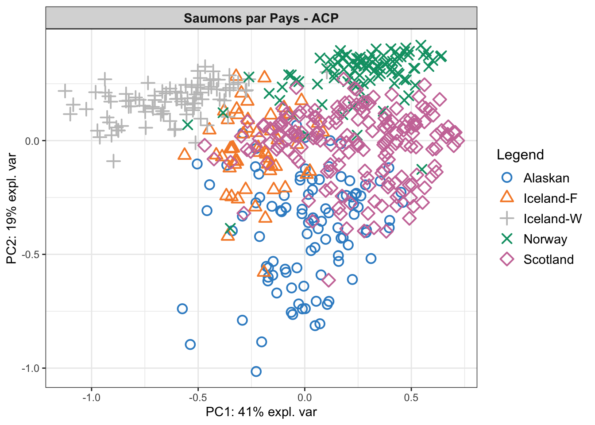
Séparation du jeu de données en jeu d’entraînement et jeu test
intrain <- createDataPartition(saumon_norm$pays, p=0.8, list=FALSE)
#save(intrain,file="intrain.Rdata") # enregistrer intrain pour la reprod
load(file = here("data", "intrain.Rdata"))# télecharger le fichier
X.app <- saumon_norm[intrain, -1]
Y.app <- saumon_norm[intrain, 1]
X.test <- saumon_norm[-intrain, -1]
Y.test <- saumon_norm[-intrain, 1]Analyse Discriminante par les Moindres Carrés Partiels (PLS-DA)
plsda.saumon <- mixOmics::plsda(X.app, Y.app, ncomp=10, scale = FALSE) #scale FALSE par defaut true
plotVar(plsda.saumon, comp = 1:2) # permet de voir les variables sur un graphique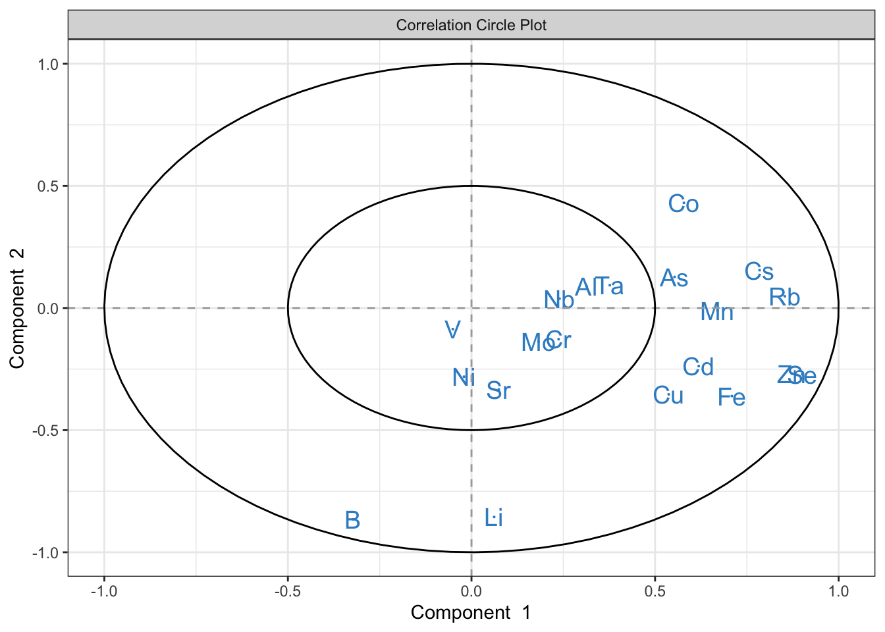
plotIndiv(plsda.saumon, comp = 1:2, centroid = TRUE, ellipse = TRUE, legend = TRUE,
title = "Projection d'échantillons PLSDA ")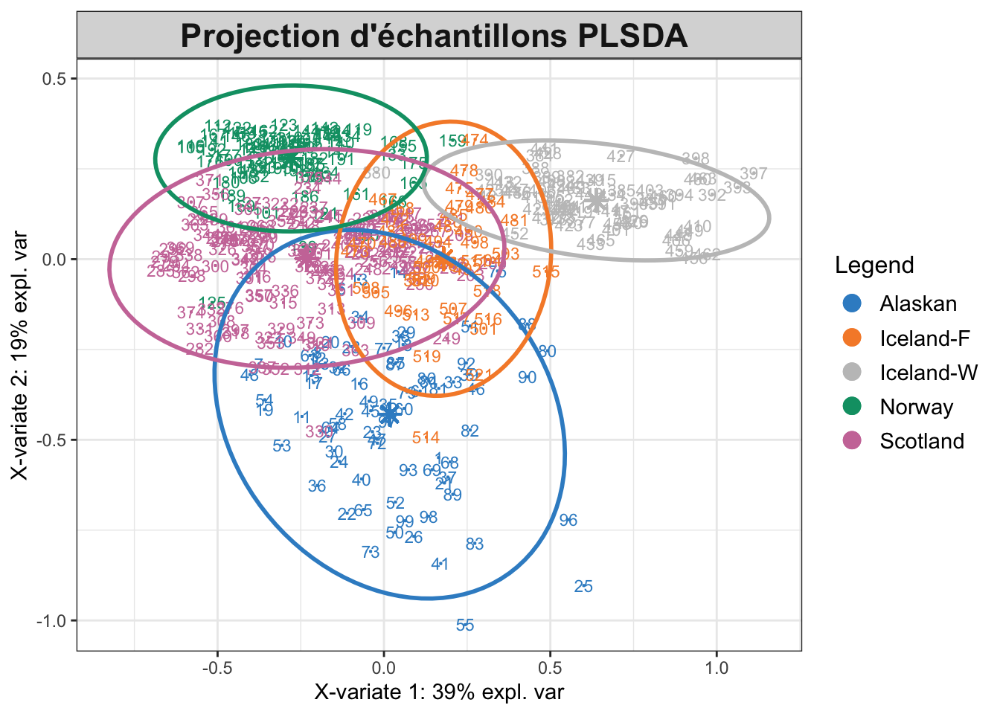
plsda.saumon
Call:
mixOmics::plsda(X = X.app, Y = Y.app, ncomp = 10, scale = FALSE)
PLS-DA (regression mode) with 10 PLS-DA components.
You entered data X of dimensions: 418 20
You entered data Y with 5 classes.
No variable selection.
Main numerical outputs:
--------------------
loading vectors: see object$loadings
variates: see object$variates
variable names: see object$names
Functions to visualise samples:
--------------------
plotIndiv, plotArrow, cim
Functions to visualise variables:
--------------------
plotVar, plotLoadings, network, cim
Other functions:
--------------------
auc Choix de composantes
set.seed(2024) # pour la reproductibité
perf.saumon <- perf(plsda.saumon, validation = "Mfold", folds = 10,
progressBar = FALSE, auc = TRUE, nrepeat = 10)Montre le nombre de composantes pour predire, avec plusieur options (max.dist, centroids) et la mahalanobis
plot(perf.saumon, col = color.mixo(5:7), sd = TRUE, legend.position = "horizontal")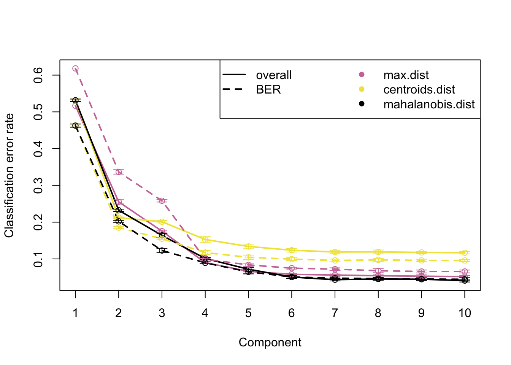
perf.saumon$choice.ncomp max.dist centroids.dist mahalanobis.dist
overall 8 7 8
BER 8 7 8perf.saumon$error.rate # montre le nombre d'erreur pour chaque regle$overall
max.dist centroids.dist mahalanobis.dist
comp1 0.51674641 0.5315789 0.53157895
comp2 0.25526316 0.2122010 0.23229665
comp3 0.17559809 0.2011962 0.16411483
comp4 0.08995215 0.1528708 0.10119617
comp5 0.06626794 0.1339713 0.07200957
comp6 0.05813397 0.1236842 0.05071770
comp7 0.05622010 0.1188995 0.04354067
comp8 0.05430622 0.1191388 0.04545455
comp9 0.05311005 0.1177033 0.04473684
comp10 0.05191388 0.1167464 0.04114833
$BER
max.dist centroids.dist mahalanobis.dist
comp1 0.61827074 0.46266901 0.46266901
comp2 0.33672496 0.18519078 0.20225882
comp3 0.25827874 0.15505755 0.12294782
comp4 0.09944416 0.11729272 0.08943790
comp5 0.08380595 0.10433444 0.06480790
comp6 0.07491183 0.09952109 0.05101839
comp7 0.07218904 0.09592463 0.04769309
comp8 0.06792527 0.09740361 0.04642086
comp9 0.06587086 0.09610791 0.04531562
comp10 0.06588942 0.09584617 0.04467631nb_compo = 4 # nombre de composontes définit
vip.saumon <- vip(plsda.saumon)[, nb_compo]
barplot(vip.saumon, xlab = colnames(X.app), las=2, main = "Variable Importance in the Projection")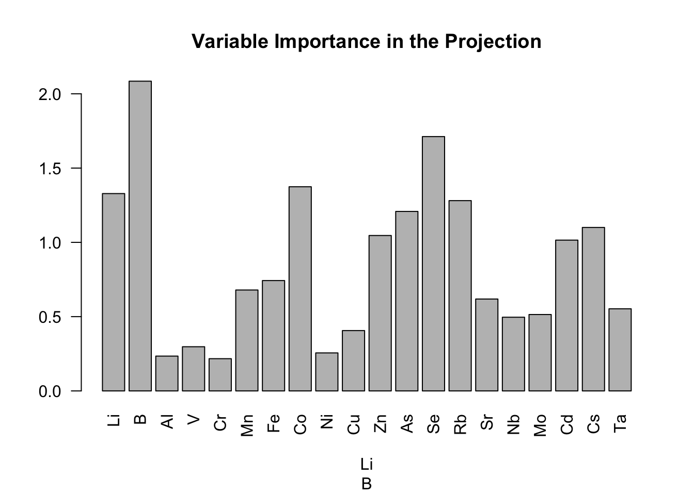
barplot(vip.saumon,
las = 2, # Orientations verticales des noms de variables
main = "Variable Importance in the Projection",
col = ifelse(vip.saumon > 1, "red", "grey"), # Variables importantes en rouge
ylim = c(0, max(vip.saumon) * 1.1))
# Ajout d'une ligne de référence
abline(h=1, col="blue") 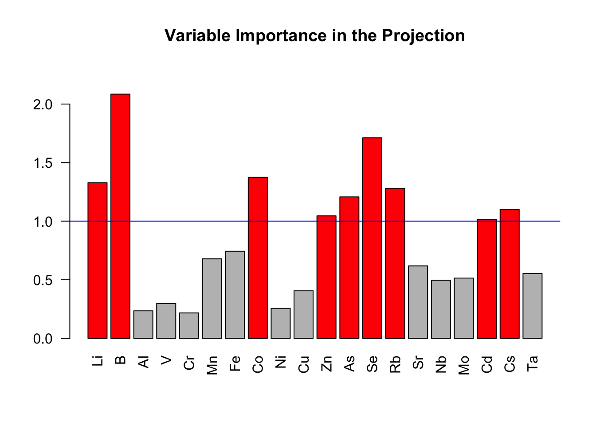
auc.saumon = auroc(plsda.saumon, roc.comp = nb_compo)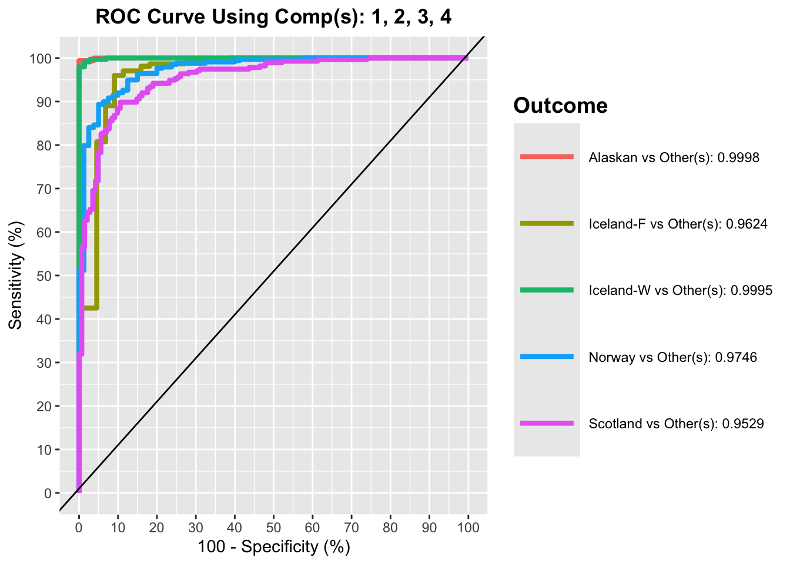
$Comp1
AUC p-value
Alaskan vs Other(s) 0.5670 6.221e-02
Iceland-F vs Other(s) 0.7249 1.048e-06
Iceland-W vs Other(s) 0.9898 0.000e+00
Norway vs Other(s) 0.7784 9.326e-15
Scotland vs Other(s) 0.7599 0.000e+00
$Comp2
AUC p-value
Alaskan vs Other(s) 0.9832 0.000e+00
Iceland-F vs Other(s) 0.7267 8.563e-07
Iceland-W vs Other(s) 0.9971 0.000e+00
Norway vs Other(s) 0.9724 0.000e+00
Scotland vs Other(s) 0.7599 0.000e+00
$Comp3
AUC p-value
Alaskan vs Other(s) 0.9998 0
Iceland-F vs Other(s) 0.9376 0
Iceland-W vs Other(s) 0.9995 0
Norway vs Other(s) 0.9651 0
Scotland vs Other(s) 0.8876 0
$Comp4
AUC p-value
Alaskan vs Other(s) 0.9998 0
Iceland-F vs Other(s) 0.9624 0
Iceland-W vs Other(s) 0.9995 0
Norway vs Other(s) 0.9746 0
Scotland vs Other(s) 0.9529 0
$Comp5
AUC p-value
Alaskan vs Other(s) 0.9999 0
Iceland-F vs Other(s) 0.9650 0
Iceland-W vs Other(s) 0.9994 0
Norway vs Other(s) 0.9848 0
Scotland vs Other(s) 0.9766 0
$Comp6
AUC p-value
Alaskan vs Other(s) 0.9998 0
Iceland-F vs Other(s) 0.9564 0
Iceland-W vs Other(s) 0.9996 0
Norway vs Other(s) 0.9893 0
Scotland vs Other(s) 0.9791 0
$Comp7
AUC p-value
Alaskan vs Other(s) 0.9999 0
Iceland-F vs Other(s) 0.9606 0
Iceland-W vs Other(s) 0.9998 0
Norway vs Other(s) 0.9893 0
Scotland vs Other(s) 0.9771 0
$Comp8
AUC p-value
Alaskan vs Other(s) 1.0000 0
Iceland-F vs Other(s) 0.9710 0
Iceland-W vs Other(s) 0.9997 0
Norway vs Other(s) 0.9896 0
Scotland vs Other(s) 0.9769 0
$Comp9
AUC p-value
Alaskan vs Other(s) 0.9999 0
Iceland-F vs Other(s) 0.9710 0
Iceland-W vs Other(s) 0.9998 0
Norway vs Other(s) 0.9915 0
Scotland vs Other(s) 0.9799 0
$Comp10
AUC p-value
Alaskan vs Other(s) 0.9999 0
Iceland-F vs Other(s) 0.9693 0
Iceland-W vs Other(s) 0.9998 0
Norway vs Other(s) 0.9921 0
Scotland vs Other(s) 0.9834 0Taux d’erreur sur la base test
plsda.fin.saumon <- plsda(X.app, Y.app, ncomp = nb_compo, scale = FALSE)
plsda.test <- predict(plsda.fin.saumon, dist="mahalanobis.dist", newdata= X.test)
plsda.test.fin <- plsda.test$class$mahalanobis.dist[,nb_compo]Matrice de confusion
mat.confusion <- table(Y.test, plsda.test.fin)
mat.confusion plsda.test.fin
Y.test Alaskan Iceland-F Iceland-W Norway Scotland
Alaskan 19 0 0 0 0
Iceland-F 0 10 0 1 0
Iceland-W 0 0 18 0 0
Norway 1 3 0 15 1
Scotland 0 1 0 2 32sum(diag(mat.confusion))/sum(mat.confusion) # calcul de l'exactitude du modéle [1] 0.91262141-sum(diag(mat.confusion))/sum(mat.confusion)[1] 0.08737864Métrique recall et precision
precision <- diag(mat.confusion) / colSums(mat.confusion) # pour la précision
recall <- diag(mat.confusion) / rowSums(mat.confusion) # pour le rappel
print(precision) Alaskan Iceland-F Iceland-W Norway Scotland
0.9500000 0.7142857 1.0000000 0.8333333 0.9696970 print(recall) Alaskan Iceland-F Iceland-W Norway Scotland
1.0000000 0.9090909 1.0000000 0.7500000 0.9142857 Calcul du score F1 pour chaque classe
f1_score <- 2 * (precision * recall) / (precision + recall)
print(f1_score) Alaskan Iceland-F Iceland-W Norway Scotland
0.9743590 0.8000000 1.0000000 0.7894737 0.9411765 Pour connaitre les éléments importants pour chaque composant
chargements <- loadings(plsda.fin.saumon)
chargements$X
comp1 comp2 comp3 comp4
Li 0.008964501 -0.4588862072 0.150378615 -0.33668167
B -0.256269451 -0.6818269920 0.441188848 0.23963969
Al 0.080764726 0.0299523940 0.042070663 -0.02750608
V -0.034764210 -0.0009046813 -0.130204390 0.02008908
Cr 0.071070471 -0.0377640641 0.007907627 0.05022188
Mn 0.173648921 0.0211225704 0.203676706 -0.16191590
Fe 0.210951974 -0.1552414077 -0.149491265 0.10381226
Co 0.135816558 0.3166949106 0.421057444 0.31905502
Ni 0.001320836 -0.0894152396 -0.050928120 0.03594458
Cu 0.102988297 -0.1106426865 -0.041157067 0.07681745
Zn 0.370964836 -0.1965595383 0.068665442 -0.07755414
As 0.169533209 0.0785343194 0.269274690 -0.53190235
Se 0.579540293 -0.2826197067 -0.289639291 0.12929686
Rb 0.358413233 0.0784967995 0.388969234 0.19916232
Sr 0.032219788 -0.0537203639 -0.034722406 -0.33146513
Nb 0.045883129 0.0406332068 0.062762789 0.25249882
Mo -0.010332293 -0.0264612505 0.192279840 0.16275678
Cd 0.268539116 -0.1202022379 -0.309500802 0.13914753
Cs 0.321533399 0.1526348143 0.254711082 -0.21502098
Ta 0.091232764 0.0575383770 0.057858566 0.26177170
$Y
comp1 comp2 comp3 comp4
Alaskan 0.02247218 -0.806396974 -0.5151578 -0.1617632
Iceland-F 0.12867531 0.001277555 0.4809542 -0.5222550
Iceland-W 0.74984154 0.274862117 -0.3076689 0.2892834
Norway -0.36451565 0.523572748 -0.2475114 -0.3220023
Scotland -0.53647337 0.006684554 0.5893840 0.7167371par(mfrow=c(2,2)) # Configure l'affichage en grille 2x2
for(i in 1:4) {
barplot(chargements$X[, paste("comp", i, sep="")],
main = paste("Composant", i),
las = 2, cex.names = 0.5,
col = rainbow(4)[i])
}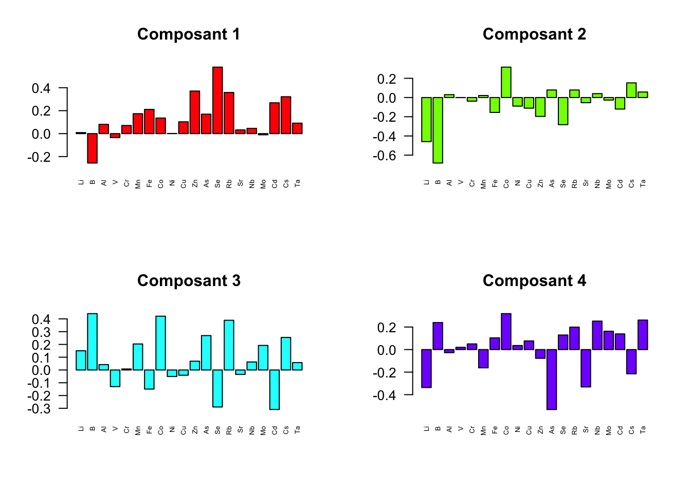